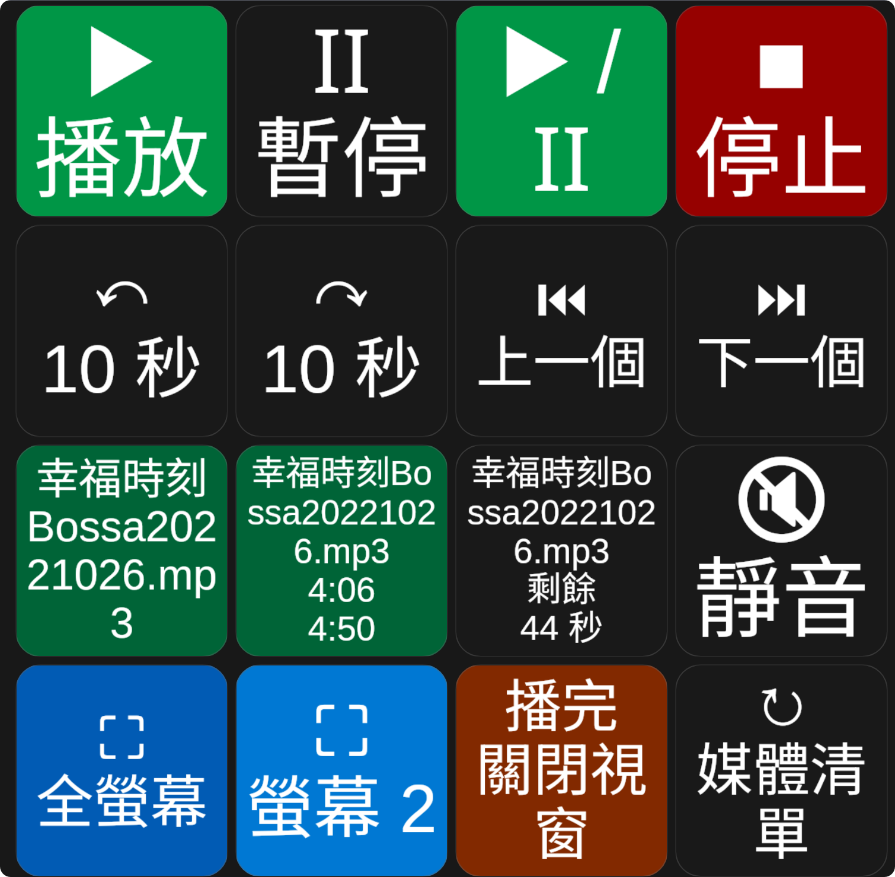

媒體資料夾
在 Companion 直接選擇 IINA Mac 上的影片；預設按鈕會顯示檔名。
MAC 播放器 × 現場控制
在另一台電腦使用 Bitfocus Companion，遠端選擇影片、指定播放視窗與螢幕，並即時取得播放狀態與剩餘秒數。

WHAT IT DOES
在 Companion 直接選擇 IINA Mac 上的影片；預設按鈕會顯示檔名。
建立具名視窗，或選擇已開啟的播放器，讓不同內容各自運作。
將目標視窗送到螢幕 1–4，並直接進入全螢幕播放。
可選保留視窗、關閉視窗或無限循環，符合不同播出情境。
取得檔名、播放／暫停、時間、音量及整數剩餘秒數。
以配對金鑰驗證 WebSocket 連線，適合可信任的區域網路或 VPN。
CURRENT RELEASE
兩邊都要安裝：IINA Mac 使用外掛，Companion 主機匯入模組。
SETUP GUIDE
下載並打開 iina-companion-remote-0.5.0.iinaplgz。完成後完全結束 IINA，再重新開啟。
前往「IINA → 設定 → 外掛 → Companion Remote」，選擇存放影片的資料夾，並複製配對金鑰。
在 Companion 5.x 的 Modules 頁面選擇 Import module package，匯入下載的 iina-remote-0.5.0.tgz。
新增 IINA Remote 連線，主機位址只填 IINA Mac 的 IP，例如 192.168.1.50；連接埠預設 19190，再貼上配對金鑰。
執行「更新媒體檔案清單」，或重新連線。看到檔名選單後即可建立播放按鈕。
MULTI-WINDOW WORKFLOW
第一次選「建立新視窗」並命名。視窗出現在清單後，其他按鈕可直接指定它。
使用 remaining_seconds 變數；當數值為 0 時，可由 Companion 觸發下一個動作。
播放完畢選「循環播放」，適合環境影片、展場視覺與等待畫面。
TROUBLESHOOTING
確認 IINA 已完全重新啟動、外掛已啟用、IP 與 19190 連接埠正確。兩台電腦必須位於可互通的區域網路或 VPN。
回到 IINA 外掛偏好設定重新選擇媒體資料夾，再於 Companion 執行「更新媒體檔案清單」。
從 IINA 外掛設定重新複製完整金鑰，貼到 Companion 的配對金鑰欄位，避免前後空格。
確認 macOS 已辨識所有顯示器。螢幕編號依 IINA／macOS 回報順序排列，可依序測試螢幕 1、2、3、4。
目前使用未加密的 ws://。請只在可信任的 LAN 或 VPN 使用，不要直接把 19190 對外公開。